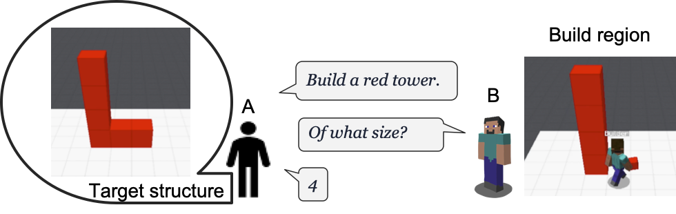
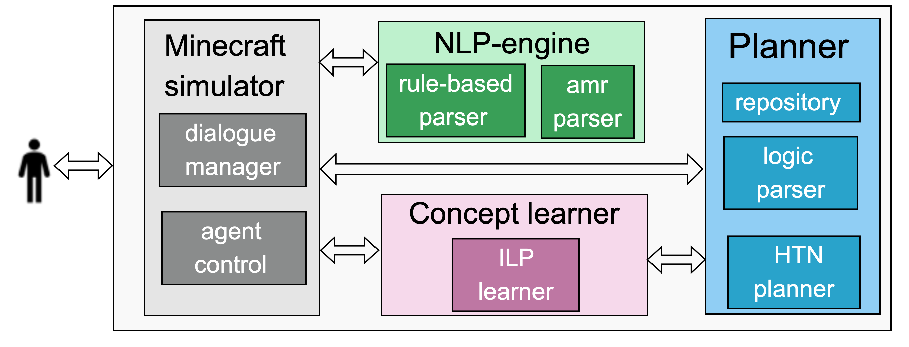

Human-guided Collaborative Problem Solving
Harsha Kokel, Mayukh Das, Rakibul Islam, Julia Bonn, Jon Cai, Soham Dan, Anjali Narayan-Chen, Prashant Jayannavar, Janardhan Rao Doppa, Julia Hockenmaier, Sriraam Natarajan, Martha Palmer, Dan Roth · ICAPS 2021 / ACS 2022
What?
We consider human-machine collaborative problem solving as a planning task coupled with natural language communication. We propose a task of collaboratively building target structures in a Minecraft environment, where two players — an architect (human) and a builder (machine) — collaborate and communicate via a chat interface.

The architect has access to the target structure and can see the current state of the build region. The builder (Steve, from Minecraft) can move and place/remove blocks, but has no access to the target structure — the architect must describe it entirely through chat.
Why?
Human-machine collaborative planning is challenging: it requires shared perception of the world, sophisticated language understanding, fluent execution, bi-directional communication, and contextual understanding. For a successful build, the architect must decompose the target into smaller structures the builder knows how to construct, and the builder must interpret each instruction in context and plan its actions. The task poses three core conundrums: (1) communication between architect and builder is inherently bi-directional, (2) the builder must be able to seek clarification as needed, and (3) both players must share an initial vocabulary and expand it with experience.
How?
Our framework has three components that interact with the Minecraft simulator: a natural language engine that parses utterances to a formal representation and back, a concept learner that induces generalized plan concepts from limited interaction, and a planner that solves the task based on human interaction. More details on each component can be found in the paper.

The following video demonstrates our framework.
Few More Demonstration Videos
Citation
Harsha Kokel, Mayukh Das, Rakibul Islam, Julia Bonn, Jon Cai, Soham Dan, Anjali Narayan-Chen, Prashant Jayannavar, Janardhan Rao Doppa, Julia Hockenmaier, Sriraam Natarajan, Martha Palmer, and Dan Roth. (2022) Lara — Human-guided collaborative problem solver: Effective integration of learning, reasoning and communication. In Tenth Annual Conference on Advances in Cognitive Systems 2022.
Harsha Kokel, Mayukh Das, Rakibul Islam, Julia Bonn, Jon Cai, Soham Dan, Anjali Narayan-Chen, Prashant Jayannavar, Janardhan Rao Doppa, Julia Hockenmaier, Sriraam Natarajan, Martha Palmer, and Dan Roth. (2021) Human-guided Collaborative Problem Solving: A Natural Language based Framework. In ICAPS 2021.
@inproceedings{KokelDIBCDNJDHNPR22,
author = {Harsha Kokel, Mayukh Das, Rakibul Islam, Julia Bonn, Jon Cai, Soham Dan, Anjali Narayan-Chen, Prashant Jayannavar, Janardhan Rao Doppa, Julia Hockenmaier, Sriraam Natarajan, Martha Palmer, Dan Roth},
title = {Lara -- Human-guided collaborative problem solver: Effective integration of learning, reasoning and communication},
year = {2022},
booktitle = {Tenth Annual Conference on Advances in Cognitive Systems ({ACS})}
}
@inproceedings{KokelDIBCDNJDHNPR21,
author = {Harsha Kokel, Mayukh Das, Rakibul Islam, Julia Bonn, Jon Cai, Soham Dan, Anjali Narayan-Chen, Prashant Jayannavar, Janardhan Rao Doppa, Julia Hockenmaier, Sriraam Natarajan, Martha Palmer, Dan Roth},
title = {Human-guided Collaborative Problem Solving: A Natural Language based Framework},
year = {2021},
booktitle = {Thirty First International Conference on Automated Planning and Scheduling ({ICAPS})}
}
Acknowledgements
We gratefully acknowledge the support of CwC Program Contract W911NF-15-1-0461 with the US Defense Advanced Research Projects Agency (DARPA) and the Army Research Office (ARO). Any opinions, findings and conclusions or recommendations expressed in this material are those of the authors and do not necessarily reflect the views of DARPA, ARO, or the US government.